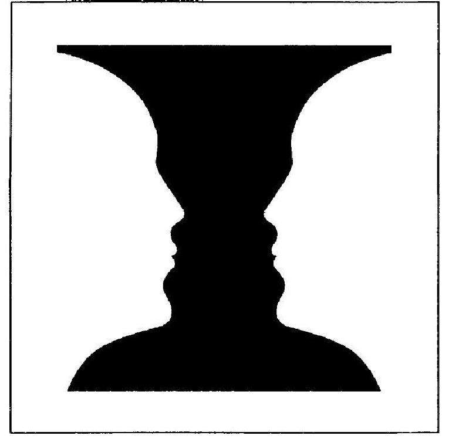

Das Mentaltraining
Ziel des mentalen Stressmanagements ist es, stressverschärfende Denkmuster und Einstellungen achtsam zu erkennen, zu reflektieren und schrittweise in förderliche, stressmindernde Denkweisen zu überführen...
Der Begriff „mental“ bezieht sich auf Bewertungen, Gedanken und gedankliche Techniken zur Veränderung dieser Muster. Zentral ist eine achtsame innere Haltung: Gedanken sollen nicht sofort bekämpft, sondern bewusst und bewertungsfrei wahrgenommen werden.
Mentales Stressmanagement ist keine naive „Positiv-Denken“-Strategie. Es würdigt tiefliegende Muster und verändert sie achtsam.
Vier Ebenen mentaler Prozesse
- Persönliche Sollwerte: überhöhte Anforderungen flexibilisieren
- Bewertung von Anforderungen: alternative Sichtweisen einnehmen
- Selbsteinschätzung: Ressourcen stärken
- Bewertung von Stressreaktionen: Akzeptanz fördern
Methodisches Vorgehen
Das Training kombiniert kognitiv-verhaltenstherapeutische und achtsamkeitsbasierte Ansätze. In fünf Schritten wird die Selbststeuerung im Umgang mit Belastungen gefördert – realistisch, achtsam und mitfühlend.
Gedanken und Stress
Gedanken – besonders wenn sie mit der Realität verschmelzen – können Stress verursachen. Beispiel: das Wort „Spinne“ bei Spinnenphobie.
Übung: Stressgedanke
Stellen Sie sich eine unangenehme Situation vor und schließen Sie die Augen. Erleben Sie sie mit allen Details.
Nachbearbeitung: Was haben Sie gespürt, gedacht, gefühlt? Was nehmen Sie daraus mit?
Denkmuster & Wahrnehmung
Typische stressverstärkende Denkmuster erkennen und verändern.
Bild zur Interpretation
Beispiel für unterschiedliche Wahrnehmungsperspektiven (bitte Bild einfügen):

Wie Gedanken sind auch Bilder interpretierbar – je nach innerem Zustand.
Übung: Reframing
Welche Gedanken verstärken Ihren Stress? Welche helfen zu entlasten?
Gedanken unterbrechen?
Versuche, Gedanken zu unterdrücken (z. B. rosa Elefant), führen oft zum Gegenteil.
Übung: Der rosa Elefant
Denken Sie 30 Sekunden lang nicht an einen rosa Elefanten. Wie oft tauchte das Bild dennoch auf?
Was stattdessen? – Defusion
ACT-Techniken helfen, sich von belastenden Gedanken zu distanzieren – ohne sie zu verdrängen.
Übung: Defusionstechniken
- Gedanken benennen: „Ich bemerke, dass ich denke: ...“
- Gedanken aufschreiben: alles ohne Bewertung notieren
- Blätter auf dem Fluss: Gedanken treiben vorbei
- Gedankenradio: Gedanken wie Radiosender wahrnehmen